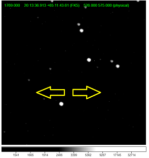
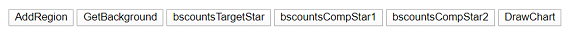
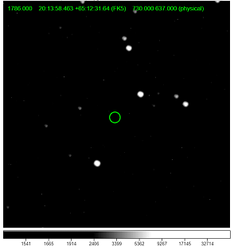
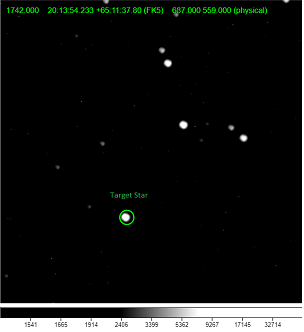
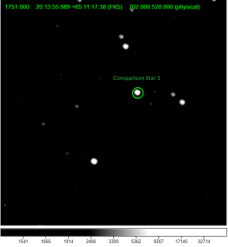
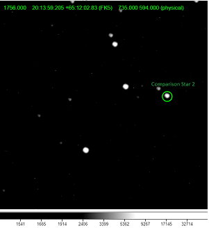
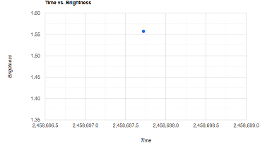

1 -- Select the File Button at the top left, then the drop down titled open at the top and then select local file which should open a file picker menu to select the FTS image you would like to use.
2 – From the Scale tab select Log.
3 – If necessary, adjust the Low Brightness Limit and High Brightness Limit until the image is adequately displayed by left clicking the image and dragging left and right. You will effectively be adjusting the Brightness and Contrast for your image display.

4 – Use a finder-chart to locate your target and comparison stars. If you will be selecting comparison stars, make sure to label your comparison stars on your finder-chart.
5 – Use the Zoom tab to zoom in or out as needed.
6 – Click the AddRegion button on the top left of the screen. A green circle will appear on the image.

7 – Make sure the circle is on a spot where it is just background and no stars are in the circle.

8 – Click the GetBackground Button on the top left of the screen.
Next, identify your target star and two comparison stars and follow the instructions below:
9 – Drag and center the same green circle on your target star and click the bscountsTargetStar button at the top of the screen.

10– Now center the circle on a different comparison star1. Click the bscountsCompStar1 button at the top of your screen.

11– Center the circle again on a different comparison star2. Click the bscountsCompStar2 button at the top of your screen

12 – Click the DrawChart button at the top of the screen and a graph similar to below will appear
